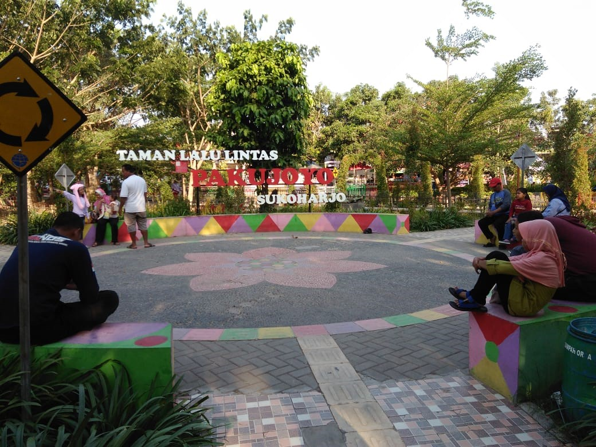

Sejarah

Nama "Sukoharjo" diambil dari bahasa Jawa, terdiri dari kata "suka"
dan "harja", yang artinya daerah yang membawa kesejahteraan. Nama
ini muncul saat Susuhunan Pakubuwono II mencari lokasi baru untuk
keraton setelah Keraton Mataram di Kartasura hancur akibat
pemberontakan. Tokoh kerajaan seperti Kiai Yosodipuro, Kiai Tohjoyo,
dan Pangeran Wijil diajak berdiskusi oleh Pakubuwono II. Kiai
Tohjoyo mengusulkan bahwa daerah pusat pemerintahan harus memiliki
sifat "Sukoraharjo", yaitu membawa kemakmuran dan kesejahteraan. Tim
dibentuk untuk menemukan daerah sesuai dengan usulan Kiai Tohjoyo.
Tim ini termasuk Raden Tumenggung Honggowongso dan Tumenggung
Tirtowiguno. Mereka menemukan daerah yang cocok karena memiliki
elemen penting untuk keraton, seperti alun-alun depan dan belakang,
tempat pande besi, tempat pembuatan warangka keris (mranggen),
tempat istri raja, serta kandang gajah raja. Awalnya daerah tersebut
akan dipilih sebagai lokasi keraton, tetapi rencana ini dibatalkan
karena pertimbangan strategis terkait Pangeran Sambernyawa yang
sedang berkonfrontasi dengan Pakubuwono II. Sebagai akhir cerita,
istana baru akhirnya dibangun di Desa Sala, yang kemudian menjadi
Keraton Kasunanan Surakarta.
Tempat Wisata di Sukoharjo
Tempat Wisata di Sukoharjo tergolong sangat beragam. Dari mulai
wisata alam pegunungan, wisata air terjun, sampai dengan wahana
permainan air, semuanya bisa tersedia di kabupaten ini. Kabupaten
Sukoharjo sejatinya merupakan salah satu wilayah kabupaten tersempit
di Jawa Tengah. Total luas wilayah kabupaten ini tidak sampai 500 km
persegi, yaitu hanya 466 km persegi saja. Uniknya, walaupun sempit,
kabupaten yang memiliki slogan Sukoharjo MAKMUR (Maju, Aman,
Konstitusional, Mantap, Unggul, dan Rapi) ini memiliki banyak objek
wisata yang menarik untuk dikunjungi.
Taman Pakujoyo

Taman Pakujoyo sering juga dikenal sebagai salah-satu ikon
Kabupaten Sukoharjo. Sebuah taman yang ditata secara baik,
terintegrasi, dan edukatif. Pohon-pohon besar yang ada di kawasan
tersebut memberikan nuansa keteduhan, dan kesejukan. Antar spot
dihubungkan oleh jalur trekking yang berwarna-warni. Di sisi lain,
terdapat sebuah danau cantik yang memanjakan mata. Selain itu,
danau tersebut juga dilengkapi dengan beberapa wahana air. Taman
Pakujoyo sangat populer sebagai wisata di Sukoharjo yang murah,
dan nyaman.
Dunia Air Pandawa

Objek wisata ini menawarkan berbagai macam wahana permainan air
yang mirip seperti wahana permainan air di Taman Wisata Jaya
Ancol. Dari mulai seluncuran sampai dengan ombak buatan, semuanya
bisa ditemui di Sini. Hal unik lain yang mungkin hanya bisa
ditemui di Dunia Air Pandawa adalah keberadaan patung wajah
Pandawa yang berukuran sangat besar. Kalau datang ke sini jangan
lupa untuk berfoto dengan latar belakang patung tersebut ya!
Lokasi objek wisata Dunia Air Pandawa ada di Komplek Pandawa, Jl.
Cemara Raya, Gedangan, Grogol, Kab. Sukoharjo, Jawa Tengah.
Dam Colo

Tempat wisata di Sukoharjo yang selanjutnya adalah Dam Colo. Dam
Colo merupakan salah satu tempat wisata hits sekaligus tempat
nongkrong di Sukoharjo yang selalu ramai dikunjungi Oleh
wisatawan, terutama dari kalangan anak muda. Tempat wisata ini
sejatinya merupakan dam alias bendungan yang difungsikan sebagai
pengatur dan pengendali debit air. Hanya saja, karena bentuknya
yang unik (terutama di bagian bawahnya yang dipenuhi dengan
jajaran batu tersusun), dam ini berhasil menarik minat wisatawan
untuk mengunjunginya sebagai tempat wisata. Secara keseluruhan
tidak banyak aktivitas wisata yang bisa dilakukan di Sini.
Biasanya mayoritas wisatawan datang ke sini hanya untuk sekedar
nongkrong sembari mengambil beberapa take foto dengan latar
belakang bendungan dan jajaran batu yang dimilikinya.